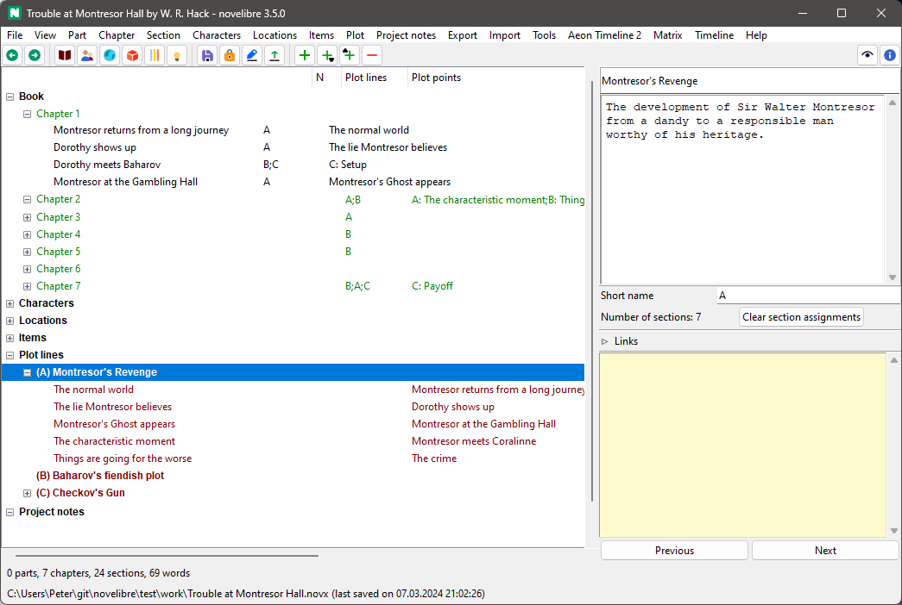
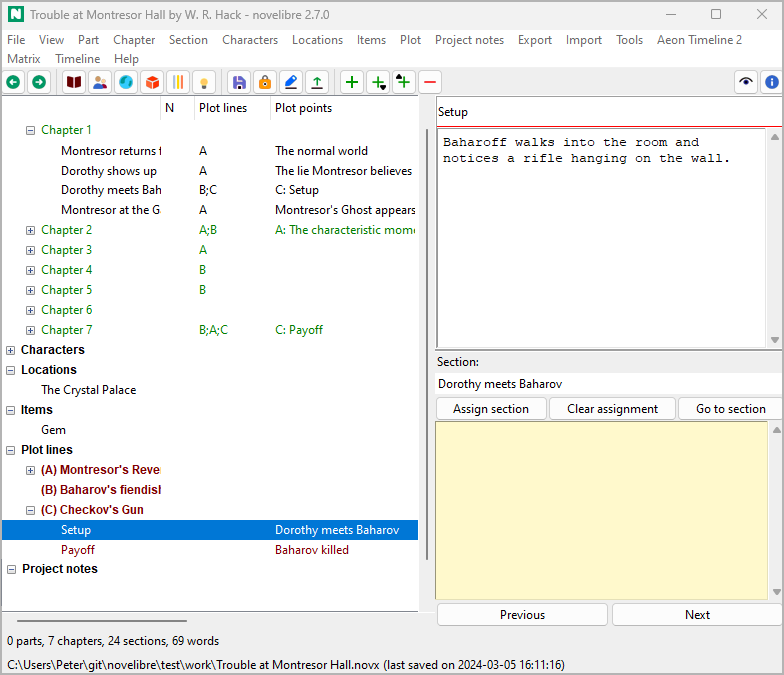
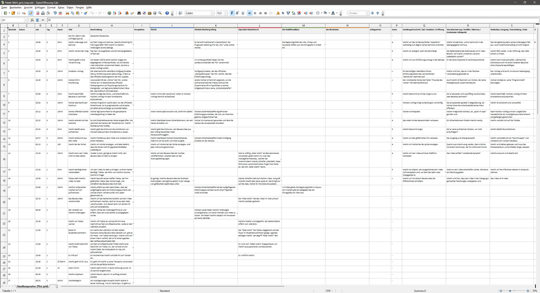

Plotten mit novelibre
Ein Strukturmodell anwenden
If you want to divide a story into stages according to a structure model (e.g. the Three Act Model, or the Save The Cat beatsheet), just insert the stages between the regular scenes at the beginning of each phase. This gives you color-coded subheadings in the Baumansicht.

Acts
Mit the nv_templates plugin kann man load pre-made story structure models from Markdown template files, and kann man save the story structure of your project for reuse.
Plotlinien definieren
novelibre provides Plotlinien as a powerful and flexible concept for plotting.

Plotlinien
„Plotlinie“ can mean a variety of things: narrative strand, thread, character arc, storyline, subplot, sequence of cause and effect, sequence of setup and payoff, and so on. You can think of a Plotlinie as a line on which plot points are arranged that characterize the progression of the story. These plot points can be assigned to scenes to indicate the scene’s relevance to the plot.
novelibre lets you define any number of Plotlinien.
Any number of scenes can be assigned to each Plotlinie.
Any number of Plotlinien can be assigned to each scene.
Each Plotlinie can contain any number of plot points.
Each plot point can be assigned to exactly one scene.
Any number of plot points can be assigned to each scene.
The association of scenes and plot points is shown in the „Plot“ column of the Baumansicht.
You can use Plotlinien to establish named connections between scenes, such as setup -> payoff, so kann man keep track of this relationship even if the scenes are far away from each other.

Setup/payoff example
Handlungsraster (Plot grid)
The novelibre plot grid is a spreadsheet with a row for each section, and a set of plot-relevant section metadata in the columns. The first visible column contains links to the sections in the Manuskript. Each Plotlinie has its own column in the plot grid, Where the Plotlinie notes are shown. The plot grid offers you a convenient way to enter the Plotlinie notes by seeing the big pictures of your plot construction.

Plot grid example
Hinweis
You can assign a section to a Plotlinie by entering text in the corresponding Plotlinie notes cell of the plot grid.